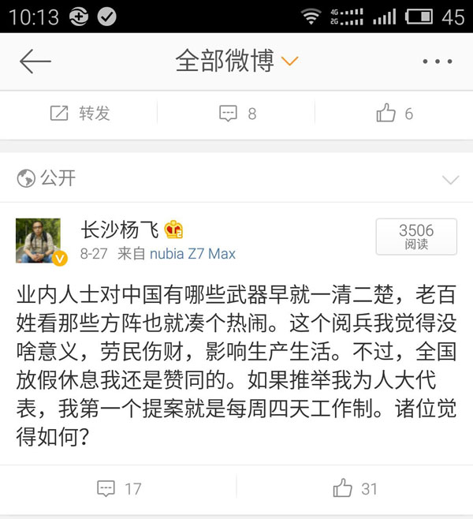
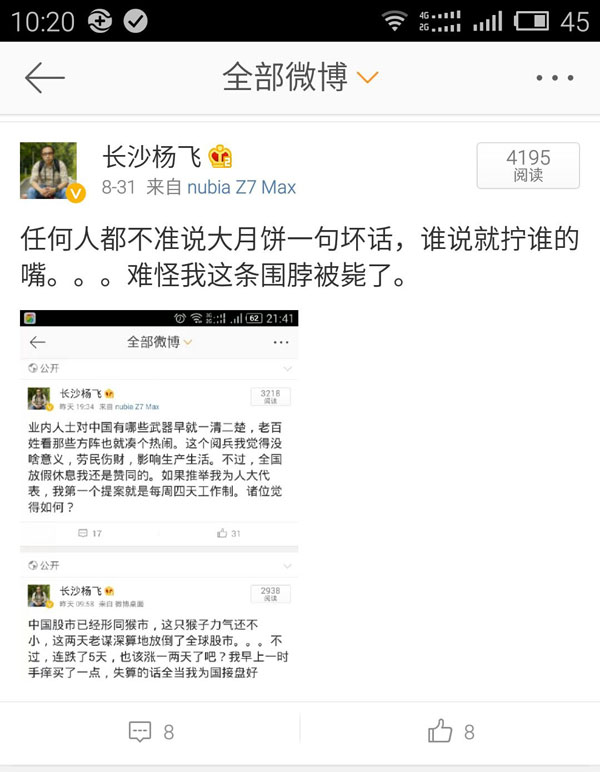
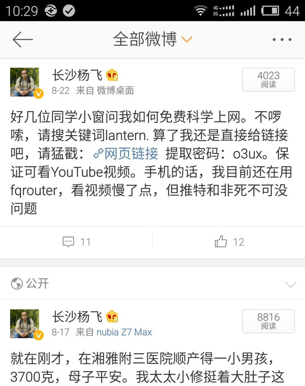

闻过则喜
我的微博被XX掉是常事了。首先跟没XX过的朋友说明一下，在没有主动设置的情况下，如果你发现自己哪条围脖下面没了“转发”二字，就说明此条已被和谐，像这样的：

看来任何人都不能说大月饼的坏话，否则XX。那么问题来了，它们是怎么知道的？这很简单，微博有关键词搜索。这也提示我们，如果以图片的形式发送微博，他们搜不到词语，就安全了。于是我通过图片再发，还把“阅兵”改称“月饼”，让它们搜不到任何关键词：

以前这么发微博一般是安全的，除非转发上千引起了他们的注意。不过这次大月饼管理很严，我通过图片发，依然是几小时后就被干掉。请注意上面的图，转发标志不见了。
再举一个例子。上个月好几位同学问我怎么爬墙，因为他们基本没法查资料写论文了。于是我发了一条围脖统一回复：

大家可以看到，这一条后来也没了转发标志。
也许您要问，新浪用户众多，每天发出上亿条围脖，用关键词来确定XX哪些，这工作量不可思议吧？确实如此，据说新浪聘请了四百人的团队专职干这事，还有不计其数的兼职人员。这开销应该每年上亿，新浪得自掏腰包，也许部分算在维稳费用里吧，我不甚清楚。
微博删帖本来就是一笔不清不明的糊涂账。被XX多了，我有时候真的很迷惑，我到底是违反了啥？但是网上怎么也找不到新浪微博的删帖和屏蔽标准。换句话说，XX是黑箱操作，标准不予说明。
以前哪条微博被XX，新浪小秘书还会私信通知你一下。2014年以来，XX已经不再通知，如果转发二字没了，那就是被和谐了。也许有人说，这些被XX的微博有时候还是能看到的吧，至少你自己能看到？这倒也是，不过微博要是没了转发，那还玩个啥？
三年前我刚玩微博的时候，粉丝只有小猫三两只，偶尔遇到一条被XX，我还屁颠屁颠去找新浪小秘书申诉，其结果大家也都猜得到。现在被干多了，我习以为常，也不再去申诉，我懒得去浪费那个时间。若是申诉，机器人小秘书顶多说一句您违反了微博规则以及相关法律。至于具体违反了哪一条规则，哪一条法律，对不起无可奉告，不予解释。
综上所述，微博管理可以总结为“三不”：删帖不通知，标准不说明，原因不解释。
他们可以不解释，但每次被XX我自己心里免不了要琢磨一下。大月饼是上头的决定，岂能容你小老百姓说三道四？但我的看法是，一个人只要不是神仙，他总会有缺点，以前的皇上还邀谏呢。中国有句俗语叫“闻过则喜”，就是说要是有人批评我，我应该感到高兴，这是好事。要是哪天周围全是欢呼，没人敢说半个不字，那就离死不远，快成仙了。
至于科学上网这条微博为啥要删，这更简单。哪些网站不能让中国的老百姓看，这也是上头的决定。擅自爬墙，往严重里说，此乃抗旨不尊，没让你账户消失已经算客气的了。
新浪微博“不说明、不通知、不解释”的三不政策是中国大陆互联网管制的一个缩影。别说是XX你几条微博，就是屏蔽谷歌搜索、禁止全国手机访问谷歌商店这么大的事，也是一样的不说明、不通知、不解释。我就XX了，你奈我何？
用不了谷歌虽然很不爽，但时间久了，被XX多了，大多数人也像我一样习惯了，懒得理。不过也有个别愣头青不知好歹，2014年深圳就有一个叫汪龙的市民，以无法登陆Google为由，对中国联通提起诉讼。他后来接受BBC采访时表示：“我觉得我根据法律提起诉讼，这个案件也就是一个普通的电信服务合同纠纷案，我在这个过程中也没有不当之处，如果因为这个案件受到威胁，那会是我的荣幸”。
汪龙确实很荣幸，2014年9月他被有关人员带走，并不是因为谷歌的事，据说是因为他在推特上支持香港占中，涉嫌寻衅滋事。中文是一种比较灵活的语言，寻衅滋事这个词可以各种解释，如果需要，往谁脸上贴都没啥不妥。所以了，对于微博被XX这类小事，我还是别再丫丫了吧。闻过则喜是中国人的优良传统，新浪微博XX了我，那一定是我有过错，人家XX了，我应该高兴才对。
杨飞，
2015/9/5，长沙